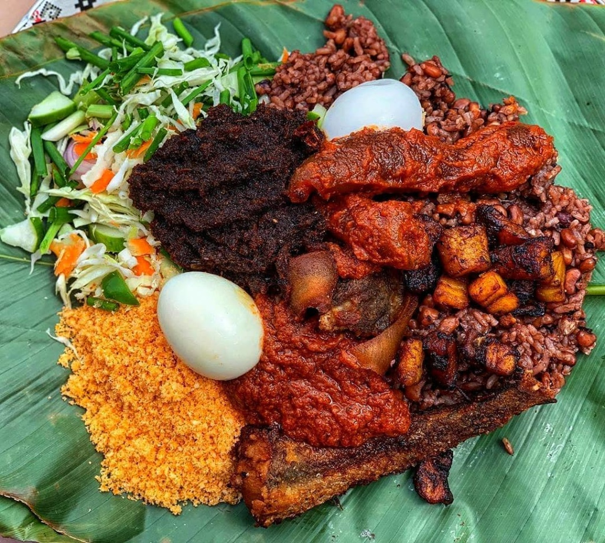

This is waakye, a popular local delicacy in Ghana. it originated from the Northern region of Ghana and is already the signature food of most localities in the country. it is prepared from rice and beans.
it is served with mainly gari, salad, spagethi and a protein based food such as meat or egg.And of course sauce, which is prepared separately from the main dish
In this section i will list the ingredients required to make this delicacy. care must be taken, this are only some not all of the ingredients.
In this section, I will list some of the steps used in the preparation of waakye.